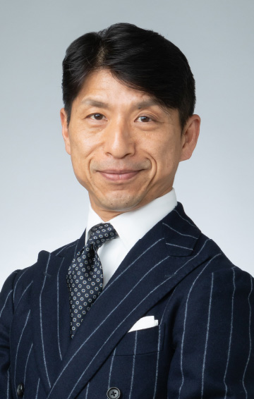

8.24（木）11：30～12：00
全てをセキュアにつなぐ – シンプルでサステナブルなDXプラットフォーム
シスコシステムズ代表執行役員社長
中川 いち朗 氏
現代のデジタルビジネスには、効率化と競争力向上とともに、セキュリティリスクや人材育成、さらに持続可能性への対応が不可欠になっています。この講演では、シンプル化とAIの力でサステナブルな成長を目指す、クラウド時代の柔軟なDXプラットフォーム戦略とその重要性について、具体的な事例を交えてご説明します。